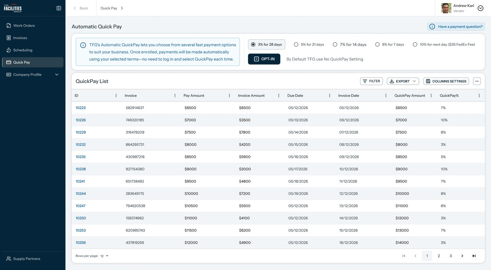
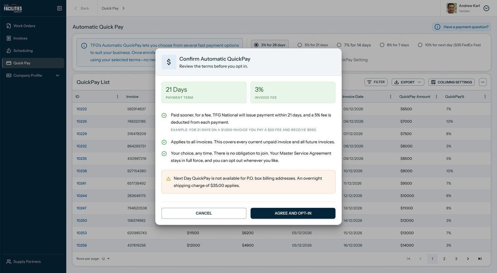

Case study · P. 02
NATJAN: a vendor portal redesigned, without starting over.
NATJAN is a janitorial management system for a US corporate facilities company, with a vendor portal, an internal portal and a mobile app. I redesigned the vendor portal on a customized MUI, and designed the main inspection and checklist flows for the mobile app.

01 Context
What is NATJAN?
NATJAN is the janitorial management system of The Facilities Group (TFG), a US corporate facilities company. It runs across several products: a vendor portal, an internal portal for TFG staff, and a mobile app for teams on site.
In the vendor portal, vendors receive work orders, log crew visits, upload documents, send invoices and choose how fast they get paid.
Unlike Sindh, this wasn't a blank page. The portal already worked. My job was to make it clearer and easier to use without throwing away what the developers had built, and to design the new mobile app's core flows from scratch.
Work orders, crew visits, documents, invoices and QuickPay on the web portal.
Inspection and checklist flows in the mobile app.
Inspection flows in the mobile app, across their areas.
My role
- 01Portal auditStudied the existing portal for usability issues and inconsistencies.
- 02Web redesignWork orders, invoices, scheduling and QuickPay, across 5 breakpoints.
- 03MUI customizationA themed MUI instead of a rebuild, agreed with developers.
- 04Mobile flowsInspection flows for three roles, plus checklist flows.
02 Problem
The portal worked. It just didn't guide anyone.
The existing portal was built on default MUI components. Every feature was there, but nothing helped a vendor see what mattered or what to do next. QuickPay, where vendors choose how fast they get paid, showed it most clearly.
QuickPay: a money decision buried in small print
Automatic QuickPay lets a vendor trade a fee for faster payment on every invoice. It's a real financial commitment, yet the old screen asked vendors to make it without showing the options or what they would cost.

01Automatic QuickPay, old portalBefore
- The rates were hidden
All five payment terms sat inside one dropdown, so vendors couldn't compare them before choosing.
- Consent came before the choice
A paragraph of small italic legal text and a checkbox had to be dealt with first.
- A button that stayed off
Opt-in stayed disabled until both were done, with nothing saying why.
- No check before committing
One click signed vendors up for every current and future invoice, with no confirmation and no example of the fee in dollars.

02Consent ticked, Opt-in still offBefore

03Term picked from the dropdownBefore
Default components, no hierarchy
A plain purple header and stock data grids put tool rows like Columns, Density and Find unique values ahead of the vendor's actual tasks.
Lists with no context
Lists opened with 1,000 rows per page and no summary of what was open, due or overdue, so vendors had to dig for the work that needed them.
03 Process
Module by module, without a rebuild.
We agreed a lightweight design workflow with the client and ran every module through it, tracked in Jira and designed in Figma.
The redesign workflow
- 01Analyze the existing portal
Find usability issues, inconsistencies and pain points. Each design task is linked to its change request or bug.
- 02Plan the improvements
Redesign screens with new UI patterns, consistent with the design system and responsive across screen sizes.
- 03Client review
Present, gather feedback and revise. The task waits on the client until the screens are approved.
- 04Handoff
Organized Figma files, specs and assets for the developers, then the task closes.
New features went through a longer path: requirements, low-fidelity wireframes, client approval, high-fidelity design, a second approval and handoff.

Customize MUI, don't replace it
After a technical study with the developers, we chose to customize MUI rather than replace it. A new theme, tokens and restyled components changed how the portal looks and feels, while the codebase and component logic stayed in place.
- 01No rebuildWorking features kept running while the look changed.
- 02Familiar for developersThe same MUI components and APIs, themed.
- 03One theme everywhereApplied consistently across 300+ screens.
What changed in the theme
I customized the library to feel subtler and more modern, then curated the main screens to present it, and the client approved the direction.
- TypographyRobotoInstrument Sans
- Corner radiusSharp 4px cornersSofter 8px on cards, buttons, dialogs and inputs
- ColourStock MUI paletteNATJAN's primary colour as the main theme
- Shadows and bordersDefault MUI elevationSubtler, softer shadows and lighter borders
- Buttons and inputsDefault MUI stylingSame sizing, with the new radius and primary colour
- IconsMaterial IconsLucide, an open-source icon library
04 Web redesign
Same portal, clearer at every step.
QuickPay, before and after
Payment terms are now choices vendors can compare at a glance, with the Opt-in button right beside them. A confirmation step spells out the term, the fee and a worked example before anything changes.
01Terms hidden in a dropdownBefore

01All five terms side by sideAfter
02Opt-in straight after the small printBefore

02Confirm before you commitAfter
One work order, every detail in tabs
A work order's information, recurrence, IVR, crew, notes and documents each have a tab, so vendors move through one page instead of hunting across screens.

01Work order Information

02Crew visits

03Documents
Design for multiple breakpoints
The same overview adapts across 5 breakpoints. On tablets the sidebar collapses to icons with labels, and on phones it moves into a menu. Summary cards stack two by two, and action buttons shrink to icons so the list stays in view.

01Desktop

02Tablet

03Phone
05 Mobile app
Inspection and checklist flows, designed from scratch.
Alongside the web redesign, I designed the main flows of NATJAN's new mobile app, for the people who work on site.
Area Manager inspection

01Dashboard

02Menu and role switch

03Map view

04Filters

05Location list

06Go to location

07Check-in

08Inspection in progress

09Summary and check-out
Vendor workflow

01Dashboard

02Recommended work order

03Choose how to check in

04Check-in

05Confirm the store

06Work in progress

07Before and after photos

08Sign-off

09Signed off
Checklists

01Checklist to finish

02Single choice

03Multiple choice

04Describe the issue

05Rate the condition

06Enter a reading

07Pick a date

08Add photos

09Review and submit

10Ready to check out
Next: Regional Manager inspection
06 Outcomes
A familiar portal that's easier to use.
- Screens redesigned
- 300+
- on one customized MUI theme
- Breakpoints
- 5
- from phone to wide desktop
- Clicks saved
- 2
- on the QuickPay opt-in
- Mobile flows
- 4
- inspections for 3 roles, plus checklists
07 Learnings
What I'd take to the next project.
Customizing can beat rebuilding
Theming MUI delivered a new experience without throwing away working code. Agreeing that with developers before designing kept every screen buildable.
A clear workflow keeps reviews moving
Linking each design task to its change request in Jira made it obvious what was waiting on whom, and approvals stopped stalling.